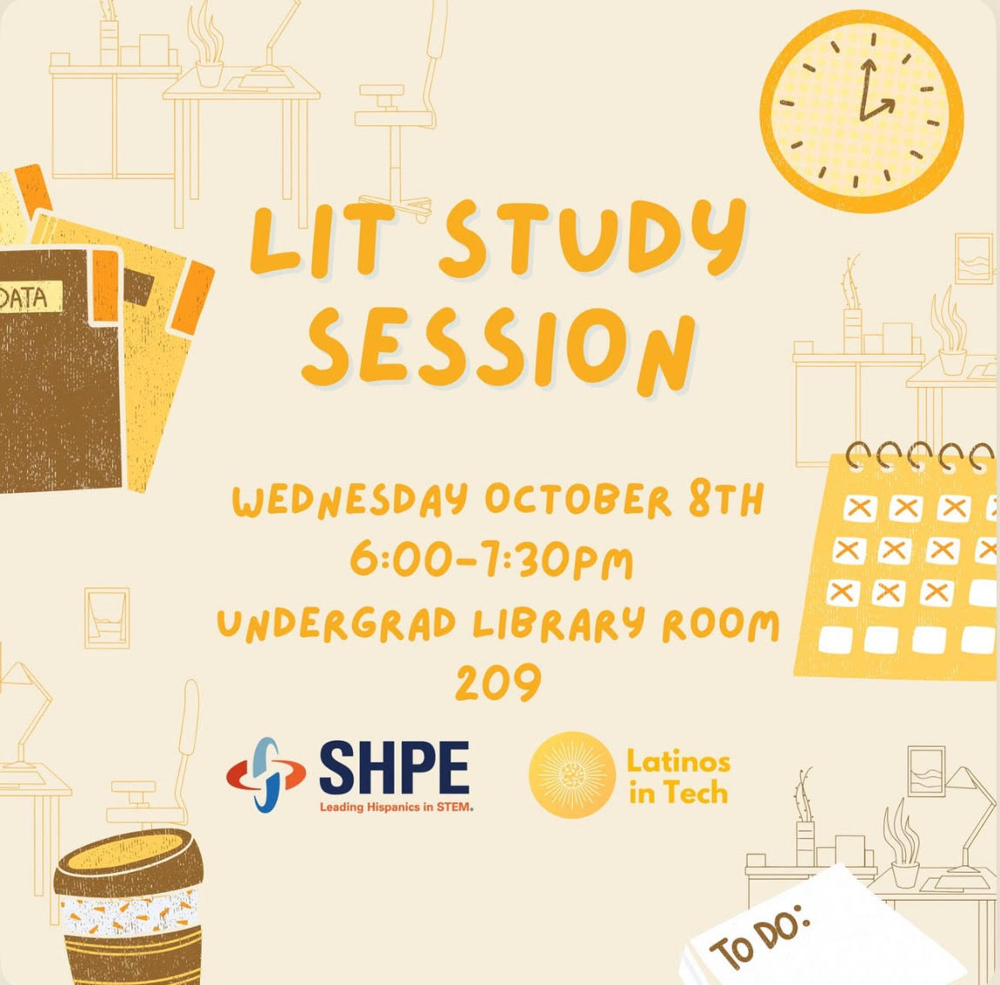
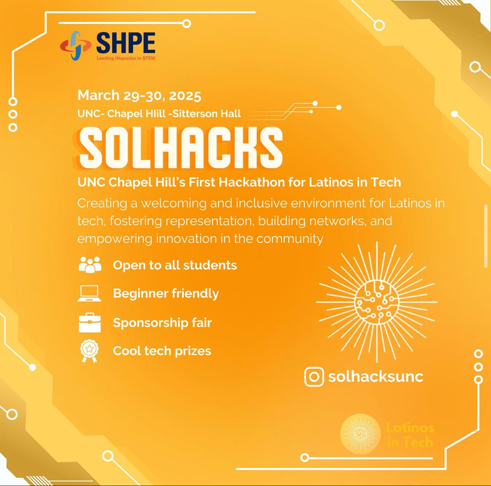

My Projects
A selection of my recent work highlighting my interests in user experience, design, and web development.

To-Do List Web App
A web app developed utilizing HTML, CSS, and JavaScript to help user organize and prioritize daily tasks efficiently.

SolHacks Website
Helped design and develop UNC's Latinos In Tech first-ever Latinx oriented hackathon website.

LIT Study Session Infographic
Designed an infographic for LIT Study Session showcasing design skills.

SolHacks Infographic
Created a promotional infographic in Canva to convey information about the hackathon.

RIM Magazine
A fictional basketball-themed digital magazine inspired by SLAM, designed using Figma to blend sports and visual storytelling.